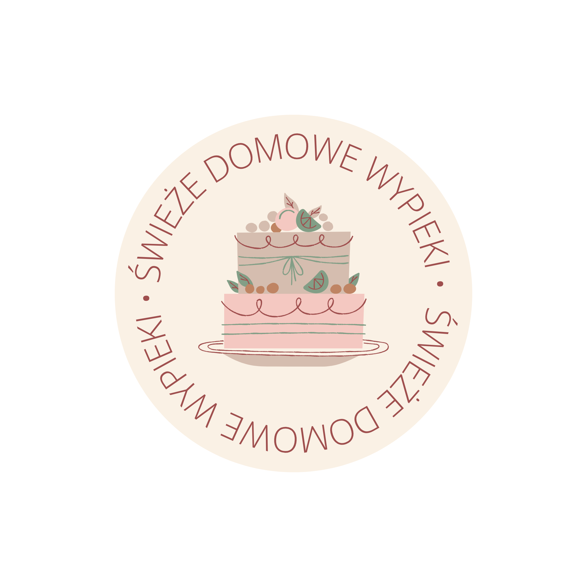
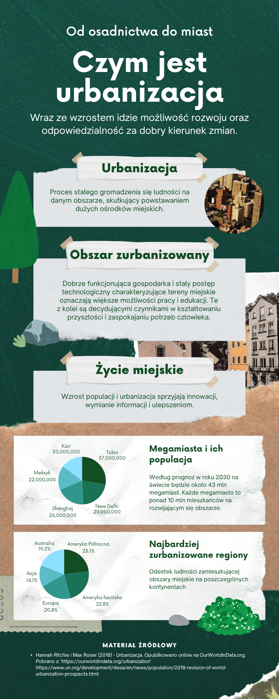

Grafika wektorowa
W tym dziale poznasz podstawy grafiki wektorowej oraz dwa narzędzia umożliwiające tworzenie projektów graficznych: Inkscape i Canva.
Nauczysz się tworzyć i modyfikować obiekty wektorowe, poznasz zasady projektowania logo oraz dowiesz się, jak przygotować czytelną infografikę.
📌 W tym dziale wykonasz 3 projekty
🐧 Projekt 1 – Pingwinek w Inkscape
Poznasz podstawowe narzędzia programu Inkscape
i wykonasz ilustrację zgodnie z przygotowaną instrukcją.
🎨 Projekt 2 – Logo w Canva
Dowiesz się, czym jest logo i jakie są zasady
jego projektowania, a następnie wykonasz własne logo.
📊 Projekt 3 – Infografika w Canva
Poznasz zasady tworzenia infografik
i przygotujesz własny projekt.
🐧 Pingwinek w Inkscape
🎯 Cel projektu
Poznasz podstawowe narzędzia programu Inkscape i wykorzystasz je do wykonania ilustracji wektorowej.
Czego się nauczysz?
Podczas wykonywania projektu nauczysz się:
- tworzyć podstawowe figury,
- zaznaczać i przesuwać obiekty,
- zmieniać wypełnienie i kontur,
- ustalać kolejność obiektów,
- duplikować elementy,
- tworzyć krzywe Béziera,
- pracować z węzłami,
- przekształcać obiekty w ścieżki,
- skalować i obracać obiekty,
- odbijać elementy,
- wyrównywać obiekty,
- grupować elementy.
📌 Zapamiętaj
Grafika wektorowa składa się z obiektów, takich jak figury, linie i krzywe. Obiekty można dowolnie skalować bez utraty jakości obrazu.
📝 Zadanie – Pingwinek
Wykonaj w programie Inkscape projekt pingwinka zgodnie z przygotowaną instrukcją.
Pracuj krok po kroku i wykonuj wszystkie polecenia znajdujące się w dokumencie.
📥 Pobierz instrukcję – Pingwinek w InkscapeZapis projektu
Po zakończeniu pracy zachowaj wersję edytowalną:
pingwinek.svgNastępnie wyeksportuj gotową grafikę jako:
pingwinek.png🎨 Projektowanie logo w Canva
🎯 Cel projektu
Dowiesz się, czym jest logo, do czego służy i jakie cechy powinno posiadać, a następnie zaprojektujesz własne logo w Canva.
Co to jest logo?
Logo to znak graficzny służący do identyfikacji firmy, marki, organizacji, produktu lub projektu.
Logo może składać się z:
- nazwy,
- inicjałów,
- symbolu graficznego,
- połączenia symbolu i tekstu.
Logo pomaga rozpoznać i zapamiętać markę.
Gdzie wykorzystuje się logo?
Logo możemy spotkać m.in. na:
- stronach internetowych,
- produktach i opakowaniach,
- wizytówkach,
- plakatach i reklamach,
- profilach w mediach społecznościowych,
- dokumentach firmowych,
- ubraniach i gadżetach.
Jakie powinno być dobre logo?
Proste – nie powinno zawierać zbyt wielu szczegółów.
Czytelne – powinno być rozpoznawalne zarówno w dużym, jak i małym rozmiarze.
Charakterystyczne – powinno odróżniać markę od innych.
Dopasowane – jego wygląd powinien pasować do charakteru firmy lub projektu.
Spójne kolorystycznie – najlepiej wykorzystać niewielką liczbę dobrze dobranych kolorów.
📌 Zapamiętaj
Logo nie jest ilustracją. Nie musi przedstawiać wszystkiego, czym zajmuje się firma.
Jego zadaniem jest przede wszystkim identyfikowanie marki i ułatwienie jej rozpoznania.
👀 Przykład
Zobacz przykładowe proste logo. Zwróć uwagę na liczbę kolorów, czytelność napisu oraz prostotę symbolu.

Uwaga: przykład służy tylko do pokazania zasad projektowania. Nie należy go kopiować.
📝 Zadanie – Zaprojektuj własne logo
1. Wymyśl markę
Wymyśl nazwę fikcyjnej firmy, marki lub innego przedsięwzięcia.
Może to być np.:
- kawiarnia,
- sklep,
- klub sportowy,
- studio graficzne,
- firma informatyczna,
- marka odzieżowa.
Możesz również wymyślić własny rodzaj działalności.
Nazwa marki: ............................................................
Czym zajmuje się marka: ............................................................
Do kogo jest skierowana: ............................................................
2. Zaplanuj logo
Zastanów się:
- jaki symbol może kojarzyć się z marką,
- jakie kolory do niej pasują,
- czy wykorzystasz pełną nazwę czy inicjały,
- jaki krój pisma będzie odpowiedni.
3. Utwórz projekt w Canva
Zaloguj się do Canva i utwórz projekt Logo.
Zaprojektuj własne logo wykorzystując:
- tekst,
- figury,
- ikony,
- proste elementy graficzne.
4. Sprawdź projekt
☐ logo jest własnym projektem
☐ zawiera nazwę lub inicjały marki
☐ zawiera element lub symbol graficzny
☐ wykorzystuje maksymalnie 3 główne kolory
☐ jest czytelne
☐ pasuje do charakteru marki
☐ wygląda dobrze również po zmniejszeniu
5. Pobierz projekt
Pobierz gotowe logo z Canva w formacie PNG.
📊 Projektowanie infografiki w Canva
🎯 Cel projektu
Dowiesz się, czym jest infografika, do czego służy i jak należy ją projektować, a następnie przygotujesz własną infografikę w Canva.
Co to jest infografika?
Infografika to sposób przedstawienia informacji za pomocą połączenia:
- krótkiego tekstu,
- ikon,
- symboli,
- liczb,
- wykresów,
- kolorów,
- ilustracji.
Jej zadaniem jest przedstawienie informacji w sposób szybki, przejrzysty i łatwy do zapamiętania.
Do czego służy infografika?
Infografiki wykorzystuje się m.in. do:
- przedstawiania zasad,
- prezentowania danych,
- wyjaśniania procesów,
- pokazywania kolejnych etapów,
- porównywania informacji,
- prezentowania ciekawostek,
- tworzenia instrukcji.
Jak powinna wyglądać dobra infografika?
Wyraźny tytuł – odbiorca od razu powinien wiedzieć, czego dotyczy infografika.
Logiczny układ – powinno być wiadomo, w jakiej kolejności czytać informacje.
Krótkie teksty – unikaj długich akapitów.
Elementy graficzne – ikony i symbole powinny pomagać w zrozumieniu treści.
Spójna kolorystyka – kolory powinny do siebie pasować.
Czytelne fonty – tekst musi być łatwy do odczytania.
📌 Zapamiętaj
Infografika nie jest dokumentem wypełnionym dużą ilością tekstu.
Jej zadaniem jest przekazanie najważniejszych informacji przede wszystkim w sposób wizualny.
👀 Przykład
Zobacz przykładową infografikę. Zwróć uwagę na podział informacji, zastosowanie ikon, kolorów oraz krótkich tekstów.

Uwaga: przykład służy jako inspiracja. Przygotuj własny projekt.
📝 Zadanie – Zaprojektuj infografikę
1. Wybierz temat
Przygotuj infografikę typu „5 zasad…”.
Możesz wybrać np.:
- 5 zasad bezpiecznego Internetu,
- 5 sposobów na mocne hasło,
- 5 zasad zdrowej pracy przy komputerze,
- 5 zasad rozpoznawania fałszywych informacji,
- 5 sposobów na ograniczenie cyfrowego śladu.
Możesz również zaproponować własny temat.
2. Przygotuj informacje
Zanim rozpoczniesz projektowanie, przygotuj:
- tytuł,
- 5 krótkich informacji,
- pomysł na ikonę lub symbol do każdej informacji.
3. Utwórz projekt w Canva
Zaloguj się do Canva i utwórz projekt Infografika.
Możesz rozpocząć od pustego projektu lub wykorzystać jeden z dostępnych szablonów.
Jeżeli korzystasz z szablonu, nie pozostawiaj go bez zmian. Dostosuj układ, kolory, teksty i elementy graficzne do swojego tematu.
4. Sprawdź projekt
☐ infografika ma wyraźny tytuł
☐ zawiera 5 informacji
☐ każda informacja ma element graficzny
☐ teksty są krótkie i czytelne
☐ zastosowano maksymalnie 3 główne kolory
☐ zastosowano maksymalnie 2 kroje pisma
☐ elementy mają równe odstępy
☐ układ informacji jest uporządkowany
☐ całość jest czytelna i estetyczna
☐ projekt został samodzielnie zmodyfikowany
5. Pobierz projekt
Pobierz gotową infografikę z Canva w formacie PNG.